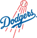

| 1 | 2 | 3 | 4 | 5 | 6 | 7 | 8 | 9 | R | H | E | |
|---|---|---|---|---|---|---|---|---|---|---|---|---|
 STL STL | 2 | 0 | 0 | 0 | 0 | 0 | 0 | 1 | 0 | 3 | 8 | 1 |
 LAD | 1 | 2 | 1 | 0 | 0 | 1 | 0 | 0 | 0 | 5 | 10 | 1 |
W Pedro Martinez · L Corey Lee
Recap
Jason Varitek's RBI double in the second put Los Angeles ahead for good in a 5-3 win over the Cardinals. Varitek went 4-for-4 with his 9th homer, three doubles and three RBI.
Pedro Martinez (4-5) went the distance and allowed one earned run on eight hits over 9 innings, striking out ten. Corey Lee (3-3) took the loss for the Cardinals and allowed four earned runs on eight hits over 5 innings.
Home runs: Jason Varitek (9)
St. Louis CardinalsAway
| Batters | AB | R | H | RBI | BB | K | HR | SB |
|---|---|---|---|---|---|---|---|---|
| Jermaine Dye RF | 4 | 2 | 2 | 0 | 0 | 0 | 0 | 0 |
| Shane Halter SS | 3 | 1 | 0 | 0 | 1 | 1 | 0 | 1 |
| Raul Ibanez C | 3 | 0 | 1 | 1 | 0 | 1 | 0 | 0 |
| Kevin Mench DH | 4 | 0 | 0 | 0 | 0 | 3 | 0 | 0 |
| Luis Matos CF | 3 | 0 | 2 | 1 | 0 | 0 | 0 | 0 |
| Terrmel Sledge PH | 0 | 0 | 0 | 1 | 0 | 0 | 0 | 0 |
| Barry Wesson LF | 4 | 0 | 1 | 0 | 0 | 3 | 0 | 0 |
| Kevin Barker 1B | 4 | 0 | 1 | 0 | 0 | 1 | 0 | 0 |
| Sergio Palafox 3B | 4 | 0 | 0 | 0 | 0 | 1 | 0 | 0 |
| Carlos Rodriguez 2B | 4 | 0 | 1 | 0 | 0 | 0 | 0 | 0 |
| Totals | 33 | 3 | 8 | 3 | 1 | 10 | 0 | 1 |
2B: Dye, Matos, Rodriguez. SB: Halter. SF: Ibanez, Sledge.
| Pitchers | IP | H | R | ER | BB | K | HR | PC | BF |
|---|---|---|---|---|---|---|---|---|---|
| Corey Lee (L) | 5.0 | 8 | 5 | 4 | 3 | 3 | 1 | 98 | 27 |
| Darren Holmes | 2.0 | 2 | 0 | 0 | 0 | 2 | 0 | 26 | 8 |
| Justin Duchscherer | 0.2 | 0 | 0 | 0 | 0 | 0 | 0 | 8 | 2 |
| George Sherrill | 0.1 | 0 | 0 | 0 | 0 | 0 | 0 | 2 | 1 |
| Totals | 8.0 | 10 | 5 | 4 | 3 | 5 | 1 | 134 | 38 |
Los Angeles DodgersHome
| Batters | AB | R | H | RBI | BB | K | HR | SB |
|---|---|---|---|---|---|---|---|---|
| Shane Victorino DH | 5 | 1 | 1 | 1 | 0 | 1 | 0 | 0 |
| Tomas Perez 2B | 5 | 0 | 0 | 0 | 0 | 2 | 0 | 0 |
| Jason Varitek C | 4 | 1 | 4 | 3 | 0 | 0 | 1 | 0 |
| Juan Gonzalez RF | 4 | 0 | 1 | 0 | 0 | 0 | 0 | 0 |
| David Segui 1B | 3 | 0 | 1 | 0 | 1 | 1 | 0 | 0 |
| Darren Bragg LF | 3 | 1 | 0 | 0 | 1 | 0 | 0 | 0 |
| Kit Pellow 3B | 4 | 0 | 1 | 0 | 0 | 0 | 0 | 0 |
| Wilson Betemit SS | 3 | 1 | 1 | 1 | 1 | 1 | 0 | 1 |
| Kory DeHaan CF | 4 | 1 | 1 | 0 | 0 | 0 | 0 | 0 |
| Totals | 35 | 5 | 10 | 5 | 3 | 5 | 1 | 1 |
2B: Victorino, Varitek 3, Betemit. HR: Varitek. SB: Betemit. 3B: DeHaan.
| Pitchers | IP | H | R | ER | BB | K | HR | PC | BF |
|---|---|---|---|---|---|---|---|---|---|
| Pedro Martinez (W) | 9.0 | 8 | 3 | 1 | 1 | 10 | 0 | 120 | 36 |
| Totals | 9.0 | 8 | 3 | 1 | 1 | 10 | 0 | 120 | 36 |
Play-By-Play
Scoring Plays
- Top 1 Raul Ibanez: Fly out, F7 (fly ball); Runner from 3rd tags up, scores, no throw by LF
- Top 1 Luis Matos: Single (ground ball); Runner from 3rd tries for Home, safe, throw by RF to home
- Bot 1 Jason Varitek: Solo home run (fly ball, 412 ft)
- Bot 2 Shane Victorino: Double (line drive); Wilson Betemit scores
- Bot 2 Jason Varitek: Double (line drive); Shane Victorino scores
- Bot 3 Wilson Betemit: Double (fly ball); Darren Bragg scores
- Bot 6 Jason Varitek: Double (line drive); Kory DeHaan scores
From the OOTP game log. Click an inning to open it. Pitch sequence: B ball, C called strike, S swinging strike, F foul, X ball in play, I intentional walk, H hit by pitch; the count is the count before the final pitch.
Top 1st STL batting2 R, 3 H, 1 E, 1 LOBSt. Louis 2, Los Angeles 0
- Jermaine Dye Double (line drive)C B F B B X · 3-2
- Shane Halter Reached on error, E6 (ground ball)C B X · 1-1Jermaine Dye to third
- Raul Ibanez Fly out, F7 (fly ball)F X · 0-1Runner from 3rd tags up, scores, no throw by LF
- Kevin Mench Strikes out swingingB C F B S · 2-2Shane Halter steals 2nd base
- Luis Matos Single (ground ball)C X · 0-1Shane Halter to thirdRunner from 3rd tries for Home, safe, throw by RF to homeLuis Matos to second
- Barry Wesson Single (line drive)B S B B X · 3-1Luis Matos to thirdRunner from 3rd tries for Home, throw by LF and out! 7-2
Bottom 1st LAD batting1 R, 2 H, 0 E, 2 LOBSt. Louis 2, Los Angeles 1
- Shane Victorino Fly out, F7 (line drive)C B F X · 1-2
- Tomas Perez Strikes out swingingS S B S · 1-2
- Jason Varitek Solo home run (fly ball, 412 ft)B S C B X · 2-2
- Juan Gonzalez Single (ground ball)X · 0-0
- David Segui Base on ballsC F B B B F F B · 3-2Juan Gonzalez to second
- Darren Bragg Base on ballsB B B B · 3-0Juan Gonzalez to thirdDavid Segui to second
- Kit Pellow Fielder's choice at 3rd, U5 (ground ball)B F X · 1-1
Top 2nd STL batting0 R, 1 H, 0 E, 1 LOBSt. Louis 2, Los Angeles 1
- Kevin Barker Fly out, F6 (popup)B B X · 2-0
- Sergio Palafox Ground out U3 (ground ball)X · 0-0
- Carlos Rodriguez Double (fly ball)X · 0-0
- Jermaine Dye Ground out 5-3 (ground ball)B S B X · 2-1
Bottom 2nd LAD batting2 R, 2 H, 0 E, 1 LOBSt. Louis 2, Los Angeles 3
- Wilson Betemit Base on ballsB B C C B B · 3-2
- Kory DeHaan Fly out, F3 (line drive)X X F B F F B F F X · 2-2
- Shane Victorino Double (line drive)B C B S B X · 3-2Wilson Betemit steals 2nd baseWilson Betemit scores
- Tomas Perez Strikes out swingingB C S S · 1-2
- Jason Varitek Double (line drive)C X · 0-1Shane Victorino scores
- Juan Gonzalez Ground out 5-3 (ground ball)S B X · 1-1
Top 3rd STL batting0 R, 0 H, 0 E, 0 LOBSt. Louis 2, Los Angeles 3
- Shane Halter Ground out 1-3 (ground ball)X · 0-0
- Raul Ibanez Strikes out swingingB S F S · 1-2
- Kevin Mench Strikes out lookingB S F C · 1-2
Bottom 3rd LAD batting1 R, 1 H, 1 E, 1 LOBSt. Louis 2, Los Angeles 4
- David Segui Strikes out lookingF S B C · 1-2
- Darren Bragg Reached on error, E4 (ground ball)F S F X · 0-2
- Kit Pellow Ground out 5-3 (ground ball)C B X · 1-1
- Wilson Betemit Double (fly ball)X · 0-0Darren Bragg scores
- Kory DeHaan Fly out, F4 (line drive)S B X · 1-1
Top 4th STL batting0 R, 1 H, 0 E, 1 LOBSt. Louis 2, Los Angeles 4
- Luis Matos Double (line drive)C C B B X · 2-2
- Barry Wesson Strikes out swingingC B C S · 1-2
- Kevin Barker Ground out 4-3 (ground ball)X · 0-0Luis Matos to third
- Sergio Palafox Fly out, F7 (line drive)B S S X · 1-2
Bottom 4th LAD batting0 R, 1 H, 0 E, 1 LOBSt. Louis 2, Los Angeles 4
- Shane Victorino Ground out 6-3 (ground ball)B B X · 2-0
- Tomas Perez Fly out, F8 (fly ball)C C X · 0-2
- Jason Varitek Double (line drive)B S X · 1-1
- Juan Gonzalez Fly out, F6 (popup)B X · 1-0
Top 5th STL batting0 R, 0 H, 0 E, 0 LOBSt. Louis 2, Los Angeles 4
- Carlos Rodriguez Ground out 6-3 (ground ball)S X · 0-1
- Jermaine Dye Ground out 3-1 (ground ball)C X · 0-1
- Shane Halter Strikes out lookingC B S C · 1-2
Bottom 5th LAD batting0 R, 1 H, 0 E, 1 LOBSt. Louis 2, Los Angeles 4
- David Segui Single (ground ball)F X · 0-1
- Darren Bragg Fielder's choice at 2nd, 4-6 (ground ball)B X X · 1-1
- Kit Pellow Fly out, F7 (fly ball)X · 0-0
- Wilson Betemit Fly out, F6 (line drive)C X · 0-1
Top 6th STL batting0 R, 0 H, 0 E, 0 LOBSt. Louis 2, Los Angeles 4
- Raul Ibanez Fly out, F9 (fly ball)C X · 0-1
- Kevin Mench Fly out, F9 (fly ball)B B B C X · 3-1
- Luis Matos Ground out 4-3 (ground ball)C B X · 1-1
Bottom 6th LAD batting1 R, 2 H, 0 E, 1 LOBSt. Louis 2, Los Angeles 5
- Kory DeHaan Triple (line drive)F F B X · 1-2
- Pitching change: Darren Holmes (RHP) comes in for STL
- Shane Victorino Strikes out lookingC B F C · 1-2
- Tomas Perez Ground out U3 (ground ball)B B F X · 2-1
- Jason Varitek Double (line drive)B X · 1-0Kory DeHaan scores
- Juan Gonzalez Ground out 5-3 (ground ball)X · 0-0
Top 7th STL batting0 R, 1 H, 0 E, 1 LOBSt. Louis 2, Los Angeles 5
- Barry Wesson Strikes out swingingF C B S · 1-2
- Kevin Barker Single (ground ball)X · 0-0
- Sergio Palafox Strikes out swingingF B B F B F F F F S · 3-2
- Carlos Rodriguez Ground out 6-3 (ground ball)C C B X · 1-2
Bottom 7th LAD batting0 R, 1 H, 0 E, 1 LOBSt. Louis 2, Los Angeles 5
- David Segui Fly out, F6 (popup)B F B X · 2-1
- Darren Bragg Fly out, F7 (fly ball)B B B C C X · 3-2
- Kit Pellow Single (ground ball)B X · 1-0
- Wilson Betemit Strikes out swingingC C S · 0-2
Top 8th STL batting1 R, 2 H, 0 E, 2 LOBSt. Louis 3, Los Angeles 5
- Jermaine Dye Single (line drive)X · 0-0
- Shane Halter Base on ballsF B B B F B · 3-2Jermaine Dye to second
- Raul Ibanez Single (line drive)B X · 1-0Jermaine Dye to thirdShane Halter to second
- Kevin Mench Strikes out swingingF C S · 0-2
- Barry Wesson Strikes out swingingB B F F S · 2-2
Bottom 8th LAD batting0 R, 0 H, 0 E, 0 LOBSt. Louis 3, Los Angeles 5
- Pitching change: George Sherrill (LHP) comes in for STL
- Kory DeHaan Fly out, F6 (fly ball)F X · 0-1
- Pitching change: Justin Duchscherer (RHP) comes in for STL
- Shane Victorino Ground out 6-3 (ground ball)X · 0-0
- Tomas Perez Ground out 6-3 (ground ball)B B B C C F X · 3-2
Top 9th STL batting0 R, 0 H, 0 E, 0 LOBSt. Louis 3, Los Angeles 5
- Kevin Barker Strikes out lookingC S F C · 0-2
- Sergio Palafox Fly out, F7 (fly ball)B X · 1-0
- Carlos Rodriguez Fly out, F7 (fly ball)X · 0-0